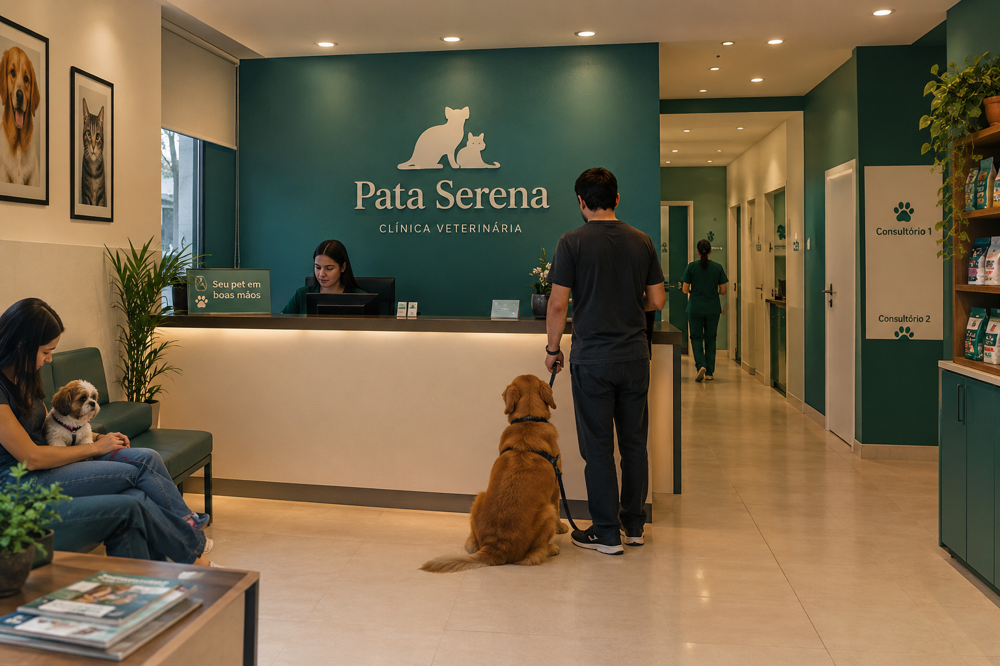

Um ambiente acolhedor para quem faz parte da família.
- A Pata Serena foi pensada para oferecer um ambiente tranquilo, limpo e confortável, onde cada animal recebe atenção e carinho desde a chegada. Com espaços organizados, salas de atendimento bem equipadas e uma atmosfera acolhedora, buscamos tornar cada visita uma experiência mais tranquila para os pets e seus tutores.
- O interior da Pata Serena foi pensado para proporcionar conforto, tranquilidade e segurança aos animais e seus tutores. Com uma decoração acolhedora, ambientes limpos e espaços bem organizados, buscamos tornar cada visita uma experiência agradável, reduzindo o estresse dos pets durante os atendimentos.
- Mais do que um espaço de atendimento, queremos que a Pata Serena seja um ambiente onde os tutores encontrem confiança e os animais recebam carinho, respeito e atenção em cada momento.
- Na Pata Serena, acreditamos que cada animal merece cuidado, respeito e atenção. Por isso, nossa proposta é oferecer serviços que contribuam para a saúde e a qualidade de vida dos pets, como:
- Consultas veterinárias: avaliações gerais e acompanhamento da saúde.
- Vacinação: prevenção de doenças e manutenção da imunização.
- Exames laboratoriais: auxílio no diagnóstico de diferentes condições de saúde.
- Atendimento clínico: avaliação e tratamento de doenças e outros problemas de saúde.
- Orientação nutricional: recomendações de alimentação conforme as necessidades de cada animal.
- Cuidados preventivos: orientações sobre higiene, controle de parasitas e qualidade de vida.
- Acompanhamento veterinário: monitoramento da saúde em diferentes fases da vida, desde filhotes até animais idosos.

- Nosso objetivo é reforçar a importância do cuidado preventivo e oferecer aos tutores informações para que possam cuidar de seus companheiros com mais segurança. Afinal, cuidar da saúde dos animais é também valorizar o vínculo de amor entre eles e suas famílias.
- Acreditamos que uma boa reputação nasce do cuidado diário, da transparência e do respeito por cada vida atendida. A Pata Serena valoriza o relacionamento próximo com os tutores, o atendimento atencioso e o compromisso com o bem-estar animal. Nosso objetivo é construir relações duradouras de confiança, sendo uma clínica reconhecida pelo carinho, pela dedicação e pela responsabilidade em cada atendimento.